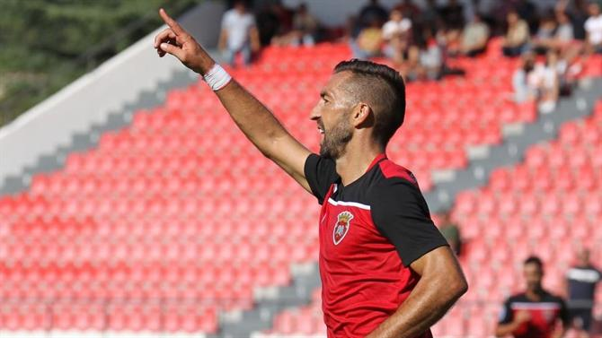

Pires vai aos c#$?&% do Tondela e leva Penafiel à glória
No jogo a contar para a segunda fase da Taça da Liga, Pires marcou o golo da vitória, esta por 1-0, aos 72 minutos. A equipa comandada por Miguel Leal segue agora para a Fase de grupos da competição.
